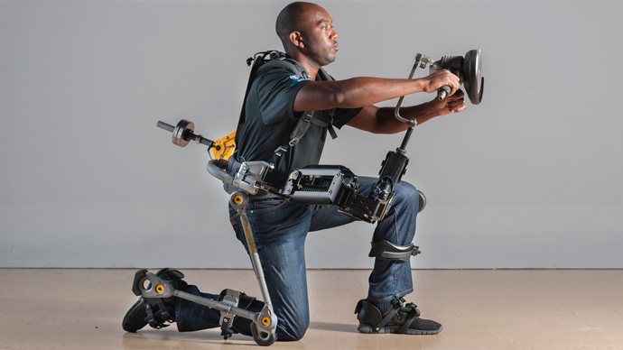

Powered Exoskeleton
Overview

What is a Powered Exoskeleton?
An exoskeleton in nature, is a rigid external covering for the body of certain invertebrate animals to provide support and protection.
Inspired by this natural protection from injury and physical stress, mankind has designed a replica of the body covering for our own use.
Using an intricate mechanical covering of the joints and limbs, the powered exoskeleton will allow its operator to expand their muscle efficiency with little to no effort produced by the muscles themselves.
As new generations of this technology come about, humans are becoming more and more aware of its potential uses.
The limitations of human muscles call for a new form of technology to augment their abilities.
Through this augmentation, humans will not be limited by their own bodies' lack of strength as they age.
The powered exoskeleton has gone through many changes throughout the decades to master the biomechanical movements that muscle do naturally.
What started out as a desire to enhance the abilities of Russian soldiers grew into a technology that could forever impact society.
The idea of the powered exoskeleton has moved from concept, to development to application so that the operator can enhance the abilities of specific muscles such as the arms or legs with one single piece of the entire suit.
The new developments of the powered exoskeleton will aid many different industries from military to medicine, providing a more sustainable life.
References